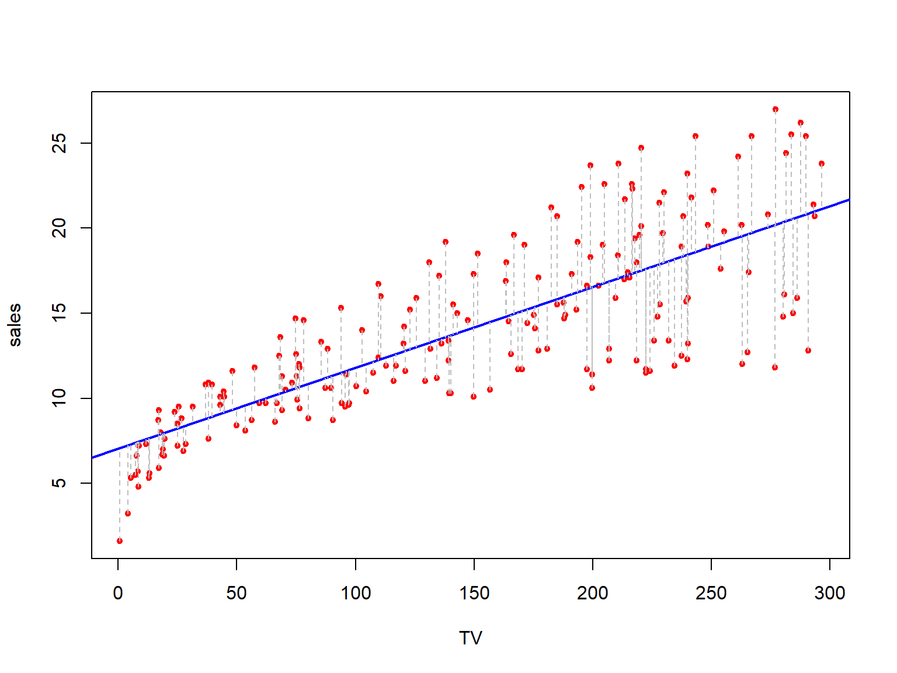
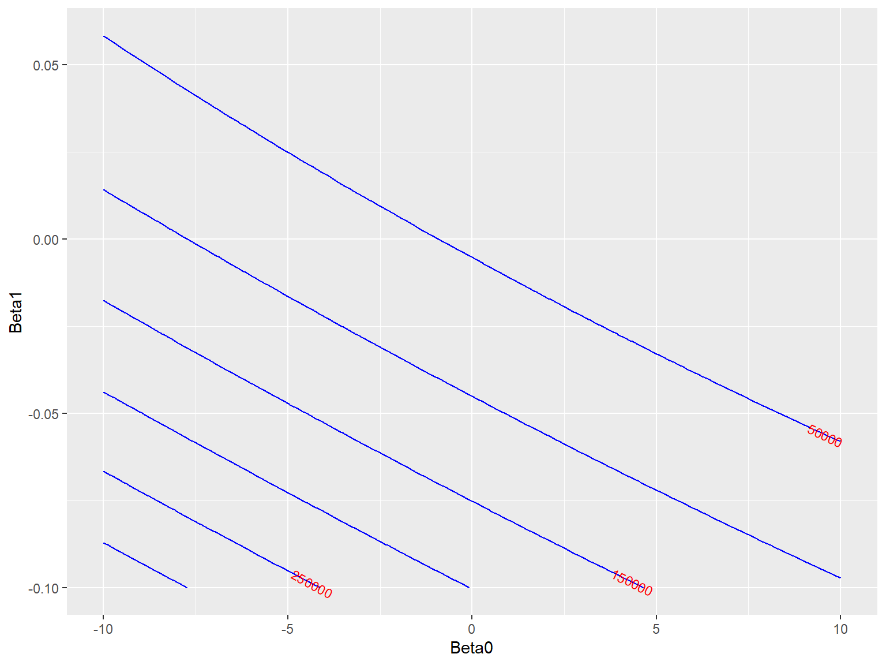
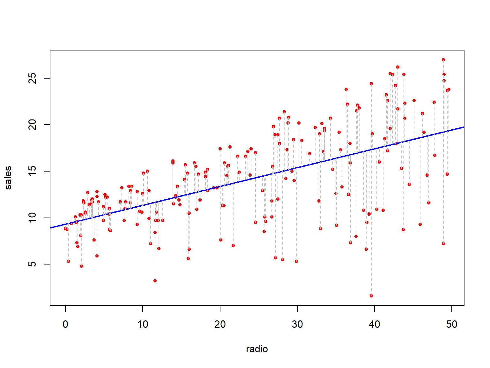
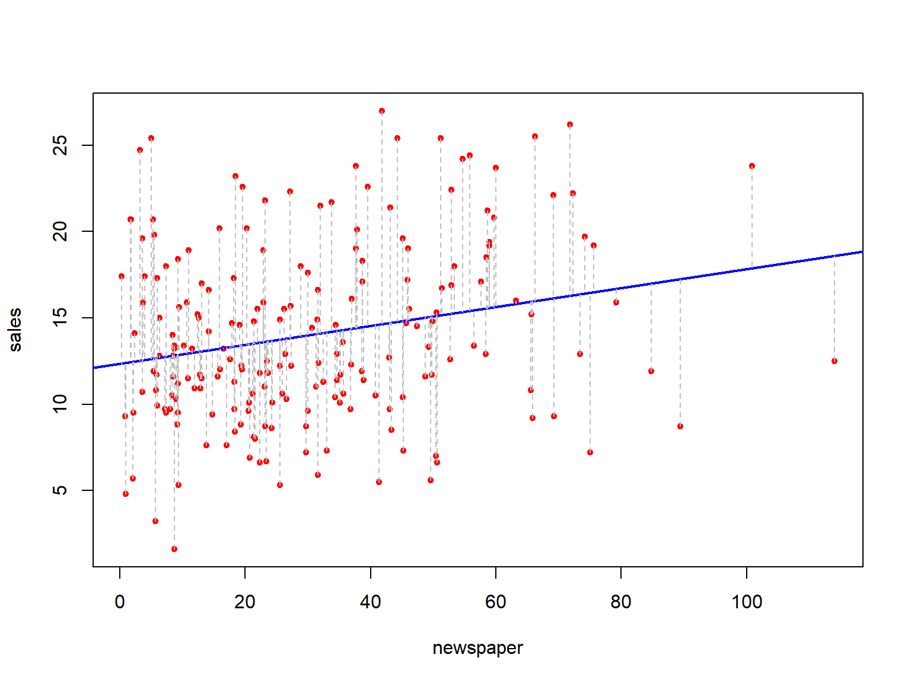
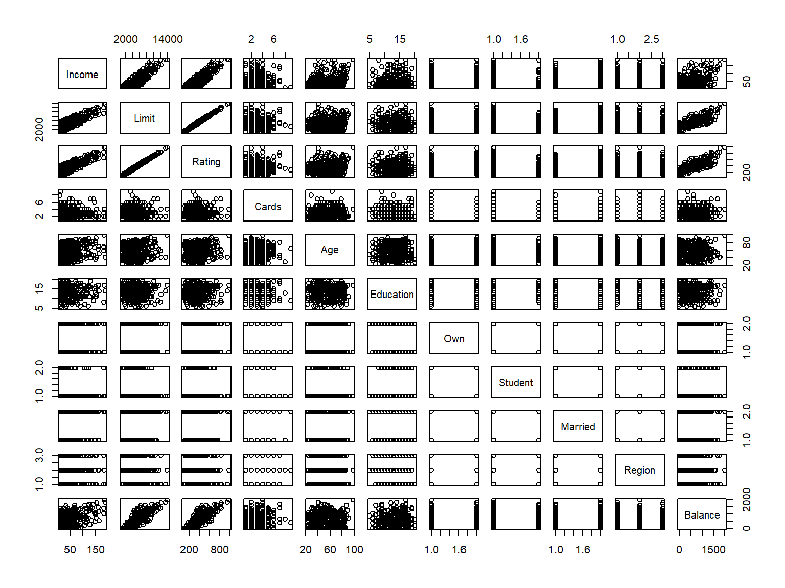

Code
install.packages("metR")Oselu Enabor ![]()
install.packages("metR")library(ISLR)
library(ISLR2)
library(ggplot2)
library(dplyr)
library(metR)
#library(plotly)This notebook is a follow-along of the ISLR 2 textbook.
Simple linear regression is a simple approach to predicting a quantitative respnse Y using a single predictor variable X. The linearity between the two variables is the fundamental assumption of SLR. Mathematically,
\[Y \approx \beta_{0} + \beta_{1}X\]
The equation above can be read as the regressing of Y on X or (Y onto X).
practical example In a software distribution company, Y can represent sales of a product T, while X can rerpresent advertising spend through TV channel.
\[sales \approx \beta_{0} + \beta_{1}\times TV_{advertisingspend}\] \(\beta_{0} \; and \; \beta_{1}\) are unknown parameters and represent the intercept and slope terms in the linear model. They are the model’s coefficient parameters. They are estimated by fitting the model with data. After estimating these parameters, the future sales of Product T can be predicted using TV advertising spend.
\[\hat{y} = \hat{\beta_{0}} + \hat{\beta_{1}}X \] The \(\hat{}\) symbol represents that this is an estimated value for an unknown parameter or coefficient.
The Advertising data set is used in this example - the data set consists of TV advertising budget and product sales in \(n=200\) different markets.
Goal: obtain coefficient estimates of \(\hat{\beta_{0}} \text{ and } \hat{\beta_{1}}\) such that our linear model fits the available data well - i.e. the values such that the resulting line is as closes as possible to the 200 data points. The minimizing least squares criterion will be used to measure closeness.
# read in the Advertising data set
advertising <- read.csv("../data/Advertising.csv")
head(advertising) X TV radio newspaper sales
1 1 230.1 37.8 69.2 22.1
2 2 44.5 39.3 45.1 10.4
3 3 17.2 45.9 69.3 9.3
4 4 151.5 41.3 58.5 18.5
5 5 180.8 10.8 58.4 12.9
6 6 8.7 48.9 75.0 7.2# attach Advertising to GlobalEnv
attach(advertising)
# fit a linear model
model <- lm(sales ~TV)
# create scatter plot sales vs tv
plot(TV,sales, col="red", pch=20)
# add regression line
abline(model, col="blue", lwd=2)
# add residuals as segments
for (i in 1:nrow(advertising)){
segments(TV[i], sales[i], TV[i], fitted(model)[i], col="gray", lty=2)
}
The plot above shows the following:
Red dots represent the relationship between Sales and TV spend budget. From the plot, we see a positive correlation between the two variables. That is as the advertising spend increases so does the sales generated.
Blue line represents the least squares regression line that is closes to all the points on the graph. The model coefficient estimates are shown below.
coefficients(model)(Intercept) TV
7.03259355 0.04753664 Plot contour
# create a grid of values for beta_0 and beta_1
beta_0_seq <- seq(0.0, 0.1,length.out=10)
beta_1_seq <- seq(5,10,length.out=10)
# create grid
coeff_grid <- expand.grid(x1=beta_0_seq, x2=beta_1_seq)
#
#contour(coeff_grid)Population Regression Line
Remember a linear regression (if fact any model) is an estimator of the true function that captures the relationship between X and Y. In real data situations, the true relationship is usually not know, so the least squares line can be used to estimate the coefficient of the model.
Think of it as the notion of samples and populations from statistics - we are using a sample estimate to characterize the relationship of the population.
This true relationship can be represented as \[Y = f(X) + \epsilon\] \[Y = \beta_{0} + \beta_{1}X + \epsilon\] \(\beta_{1}\) is the slope and intuitively - average increase in Y associated with one-unit increase in X.
\(\epsilon\) represents the random error (mean=0) present
The standard error, SE, is used to determine how accurate is a sample estimate of a population parameter. This statistic gives an indication of the average amount an estimate differs from the true value.
\[Var(\hat{\mu}) = SE(\hat{\mu})^2 = \frac{\sigma^2}{n}\]
Where: \(\sigma\) standard deviation of the predictions of Y. \(\sigma^2 = Var(\epsilon)\)
The formula holds for independent observations and residuals have a common variance. From the equation above, the more observations we have,the smaller the standard error of estimate mean.
\[SE(\hat{\beta_0})^2 = \sigma^2[\frac{1}{n} + \frac{\bar{x}}{\Sigma_{i=1}^{n} (x_{i} - \bar{x})^2}]\]
\[SE(\hat{\beta_1})^2 = \frac{\sigma^2}{\Sigma_{i=1}^{n} (x_{i} - \bar{x})^2}\]
Unfortunately, \(\sigma^2\) is not known but can be estimated from available data.This estimate is known as the residual standard error, \(RSE = \sqrt{RSS/(n-2)}\).
SE can be used to calculate the confidence intervals and prediction intervals.
A confidence interval is defined as the range of values which ill contain the true unknown value of the parameter.
An x% confidence interval means that the true value of this estimator will lie in this range with an % probability. This range is computed with the lower and upper limits computed from the sample data. A 95% confidence interval: - if take repreated samples from data and construct confiddence interval for each sample, 95% of the intervals will contain the true unknown value of the parameter.
For linear regression, 95% confidence for \(\beta_{1}\) is \[\hat{\beta_1} \pm 2 \times SE(\hat{\beta_1}) \] This holds true for \(\beta_{0}\).
summary(model)
Call:
lm(formula = sales ~ TV)
Residuals:
Min 1Q Median 3Q Max
-8.3860 -1.9545 -0.1913 2.0671 7.2124
Coefficients:
Estimate Std. Error t value Pr(>|t|)
(Intercept) 7.032594 0.457843 15.36 <2e-16 ***
TV 0.047537 0.002691 17.67 <2e-16 ***
---
Signif. codes: 0 '***' 0.001 '**' 0.01 '*' 0.05 '.' 0.1 ' ' 1
Residual standard error: 3.259 on 198 degrees of freedom
Multiple R-squared: 0.6119, Adjusted R-squared: 0.6099
F-statistic: 312.1 on 1 and 198 DF, p-value: < 2.2e-16From the model summary information above, an increase of $1000 in TV advertising budget is associated with an increase of around 48 unit sales.
Here we are testing the association of TV budget and unit sales.
Null hypothesis \(H_{0}\): No relationship between sales and TV advertising budget \[H_{0}: \beta_{1} = 0\] Alternative hypothesis \(H_{a}\): There is a relationship between X and Y \[H_{a}: \beta_{1} \neq 0\] The hypothesis tests determines how far the sample estimate \(\hat\beta_{1}\) is from zero, the further it is away, the more confident we are of the existence of a relationship between X and Y. How far is far enough? - This depends on the accuracy of \(\hat{\beta_{1}}\), i.e. - the standard error (SE\(\hat{\beta_{1}}\)) - if small, then relatively small values of $ $may provide strong evidence that \(\beta_{1} \neq 0\). However, if SE(\(\hat{\beta_{1}}\)) is large, then \(\hat{\beta_{1}}\) must be large in absolute value in order to reject the null hypothesis. In practice, the t-statistic is calculated. To do this, we calculate a t-statistic \[t = \frac{\hat{\beta_1}-0}{SE(\hat{\beta_1})}\] Once t-statistic is calculated, use the p-value to determine if the t-statistic is valid or due to random chance.
A small p-value indicates the unlikelihood of observing a substantial association (\(\beta_{1}\)) between the predictor and response due to chance, in the absence of any real association between the predictor and the response. or mathematically \[P(t | \beta_{1})=0 \]
# calculate RSS
calc_RSS <- function(beta0,beta1, data){
# get predicted sales based on TV advertising
predicted_sales <- beta0 + beta1 *data$TV
# calculate RSS
rss <- sum((data$sales - predicted_sales)^2)
return (rss)
}# create a grid of beta9 and beta1
beta0_seq <- seq(-10,10, length.out =100)
beta1_seq <- seq(-0.1,0.1, length.out = 100)# create RSS matrix grid
rss_matrix <- outer(beta0_seq, beta1_seq, Vectorize(function(b0,b1) calc_RSS(b0,b1,advertising)))# convert to data frame
rss_df <- expand.grid(Beta0=beta0_seq, Beta1=beta1_seq)
rss_df$RSS <- as.vector(rss_matrix)ggplot(rss_df, aes(x=Beta0, y=Beta1)) +
geom_contour(aes(z=rss_df$RSS), color="blue") +
geom_text_contour(aes(z=RSS), color="red", size=3)
#rss <- outer(beta0_seq, beta1_seq, function(b0, b1) calc_RSS(b0, b1, advertising))Quality of a linear regression fit is assessed with two related quantities - residual standard error (RSE) -\(R^2\)
The RSE is an estimate of the standard deviation of \(\epsilon\) - the average amount that the response will deviate from the true regression line. \[RSE = \sqrt{\frac{1}{n-2}*RSS} = \sqrt{\frac{1}{n-2}* \Sigma^{n}_{i=1}(y_{i} - \hat{y_{i}})^2}\]
RSE is considered the measure of lack of fit of the model to the data. If the model’s prediction are close the the true outcome values - then RSE will be small and can conclude model fits data well - and vice versa.
\(R^2\) is a measurement of proportion between 0 and 1 - and it is independent of the scale of Y. \[R^{2} = \frac{TSS - RSS}{TSS} = 1 - \frac{RSS}{TSS}\] TSS measures the total variance in the response Y - inherent variability in the response variable before regression is performed.
RSS measures the amount of variability that is left unexplained after performing the regression.
R^2 measures the proportion of variability in Y that can be explained using X.
Multiple Linear Regression is more often used than simple linear as in practice we have more than one predictor. For example in the Advertising data, we examined only the relationship between sales and TV advertising. However, we have radio spend and newspaper spend available. Are any of the two associated with sales?
Three simple linear regression models could be created - with each advertising medium used as a predictor.
Sales and Radio Advertising
# fit a linear model
attach(advertising)
model_radio <- lm(sales ~radio)
# create scatter plot sales vs tv
plot(radio,sales, col="red", pch=20)
# add regression line
abline(model_radio, col="blue", lwd=2)
# add residuals as segments
for (i in 1:nrow(advertising)){
segments(radio[i], sales[i], radio[i], fitted(model_radio)[i], col="gray", lty=2)
}
summary(model_radio)
Call:
lm(formula = sales ~ radio)
Residuals:
Min 1Q Median 3Q Max
-15.7305 -2.1324 0.7707 2.7775 8.1810
Coefficients:
Estimate Std. Error t value Pr(>|t|)
(Intercept) 9.31164 0.56290 16.542 <2e-16 ***
radio 0.20250 0.02041 9.921 <2e-16 ***
---
Signif. codes: 0 '***' 0.001 '**' 0.01 '*' 0.05 '.' 0.1 ' ' 1
Residual standard error: 4.275 on 198 degrees of freedom
Multiple R-squared: 0.332, Adjusted R-squared: 0.3287
F-statistic: 98.42 on 1 and 198 DF, p-value: < 2.2e-16Sales and Newspaper advertising
# fit a linear model
attach(advertising)
model_news <- lm(sales ~newspaper)
# create scatter plot sales vs tv
plot(newspaper,sales, col="red", pch=20)
# add regression line
abline(model_news, col="blue", lwd=2)
# add residuals as segments
for (i in 1:nrow(advertising)){
segments(newspaper[i], sales[i], newspaper[i], fitted(model_news)[i], col="gray", lty=2)
}
summary(model_news)
Call:
lm(formula = sales ~ newspaper)
Residuals:
Min 1Q Median 3Q Max
-11.2272 -3.3873 -0.8392 3.5059 12.7751
Coefficients:
Estimate Std. Error t value Pr(>|t|)
(Intercept) 12.35141 0.62142 19.88 < 2e-16 ***
newspaper 0.05469 0.01658 3.30 0.00115 **
---
Signif. codes: 0 '***' 0.001 '**' 0.01 '*' 0.05 '.' 0.1 ' ' 1
Residual standard error: 5.092 on 198 degrees of freedom
Multiple R-squared: 0.05212, Adjusted R-squared: 0.04733
F-statistic: 10.89 on 1 and 198 DF, p-value: 0.001148Rather than fitting a separate simple linear regression model for each predictor - we can extend the model and have a coefficient for each predictor. For p distinct predictors, the simple linear regression model would look like \[Y = \beta_{0} + \beta_{1}X_{1} + \beta_{2}X_{2} + ... + \beta_{p}X_{p} + \epsilon\] where: \(X_j\) represents the \(j_{th}\) variable
\(\beta_{j}\) represents the association between variable j and the response Y. This is interpreted as the average effect on Y of a one unit increase in \(X_j\), holding all other predictors fixed.
The advertising problem would then look like \[sales = \beta_{0} + \beta_{1} \times TV + \beta_{2} \times radio + \beta_{3} \times newspaper + \epsilon\]
Predictions can made if the coefficients for each independent variable is known. \[\hat{y} = \hat{\beta_{0}} + \hat{\beta_{1}X_{1}} + \hat{\beta_{2}X_{2}} + ... + \hat{\beta_{p}X_{p}}\].
How do we get these parameter estimates?
The parameters are estimated using least squares approach just like in the simple linear regression. The goal is to obtain the set of parameters \(\beta_0, \beta_1,..,\beta_p\) that minimize the sum of squared residuals. \[RSS = \Sigma_{i=1}^{n} (y_{i} - \hat{y_{i}})^2\]
Example - multiple linear regression - Advertising data
**Scenario 1 - predict sales using radio
The following code will create a MLR model on the Advertising data set with TV, radio, and newspaper advertising budgets used as predictors to predict product sales.
# fit a linear model
#attach(advertising)
model_mlr <- lm(sales ~newspaper+TV+radio, data=advertising)
# show summary of model
summary(model_mlr)
Call:
lm(formula = sales ~ newspaper + TV + radio, data = advertising)
Residuals:
Min 1Q Median 3Q Max
-8.8277 -0.8908 0.2418 1.1893 2.8292
Coefficients:
Estimate Std. Error t value Pr(>|t|)
(Intercept) 2.938889 0.311908 9.422 <2e-16 ***
newspaper -0.001037 0.005871 -0.177 0.86
TV 0.045765 0.001395 32.809 <2e-16 ***
radio 0.188530 0.008611 21.893 <2e-16 ***
---
Signif. codes: 0 '***' 0.001 '**' 0.01 '*' 0.05 '.' 0.1 ' ' 1
Residual standard error: 1.686 on 196 degrees of freedom
Multiple R-squared: 0.8972, Adjusted R-squared: 0.8956
F-statistic: 570.3 on 3 and 196 DF, p-value: < 2.2e-16From the results above, if we were to spend an additional $10,000.00 on: - radio advertising budget - while keeping TV and newspaper spend constant, this would result in 1885 units of additional sales. The newspaper variable’s regression coefficient estimate was non-zero and significant in the single linear regression model above however now it is negative and not significant. what does this mean?
This highlights the difference between SLR and MLR - in SLR the newspaper’s regression coefficient represents the average change in product sales associated with a $Y change in newspaper advertising budget ignoring all other predictors.
Whereas in the MLR case, the newspaper’s regression coefficient represents the average change in product sales associated with a change in newspaper budget while keeping other variables FIXED
Does it make sense that SLR says one thing and MLR says another? This is where colinearity comes into play.
# calculate the correlation matrix with R using the pearson 0method
corr_matrix <- cor(advertising[,c("TV","radio","newspaper","sales")], method="pearson")
# do not show mirrored results
corr_matrix[lower.tri(corr_matrix)] <- NA
print(corr_matrix) TV radio newspaper sales
TV 1 0.05480866 0.05664787 0.7822244
radio NA 1.00000000 0.35410375 0.5762226
newspaper NA NA 1.00000000 0.2282990
sales NA NA NA 1.0000000The correlation matrix above shows that radio and newspaper have a correlation of 0.35 - indicating that more or less markets with high newspaper advertising also tend to have high radio advertising. The MLR model says newspaper is not associated with sales but radio is associated with sales. Assuming the MLR model is correct then markets with more spend on radio will show an increase in sales and as the correlation matrix show, these markets also tend to spend more on advertising. This is where confounding comes into play - in the SLR model, when we see influence of newspaper on sales - we are ignoring radio but actually radio is the causal factor. Those that spend on radio also spend on newspaper.
The following section discusses important considerations when performing multiple linear regression.
In MLR we need to check whether \(\beta_{1}, \beta_{2}, ..., \beta_{p} = 0\), just like SLR, a hypothesis test is used to answer this question.
null hypothesis: \[H_{0}:\beta_{1}, \beta_{2}, ..., \beta_{p} = 0 \] alternative hypothesis \[H_{a}: \text{at least one } \beta_{j} \text{ is non-zero}.\] This hypothesis test is performed by calculating the F-Statistic (*why??**) \[F = \frac{(TSS-RSS)/p}{RSS/(n-p-1)}\]
If the linear model assumptions are correct, it is possible to show: \[E\{(RSS/(n-p-1)\} = \sigma^2\] and provided that \(H_0\) is true \[E\{(TSS-RSS)/p\} = \sigma^2\]
Hence when there is NO relationship between response (Y) and predictors, F-statistic is expected to be close to 1 and if \(H_a\) is true, then F is to be greater than 1.However, how large does the F-statistic need to be before we can reject \(H_0\) and conclude there is a relationship? This depends on the size of data set (n) and number of predictors (p).
When n is large, an F-statistic that is just above one can still provide evidence of a relationship between the response and variables. In contrast, a larger F-statistic is required to reject null hypothesis when the number of data set observations is small.
Typically, the response is usually associated with a subset of the predictors - variable selection is the task of determining which predictors are associated with the response in order to fit a model with only those predictors. There are three classical approaches for this task: 1. Forward selection 2. Backward selection 3. Mixed selection
\(R^2\) and RSE are the two most common numerical measures for model fit and they are computed the same way as in SLR.\(R^2\) is the square of the correlation between the response and the variable. In MLR, \(R^2\) is equal to \(Cor(Y,\hat{Y})^2\), the square of the correlation between response and fitted linear model. Note that \(R^2\) will always increase when more variables are added to the models even if those variable have a weak association with the response. why? - more variables will result in a decrease in the RSS on the training data.
There are 3 types of uncertainty associated with MLR predictions. 1. Inaccuracy of the parameters - coefficient estimates is related to the reducible error. 2. Model bias - assuming a linear model for \(f(X)\) is an approximation of reality - also reducible error. 3. Irreducible error - randomness in the population. Prediction intervals are used to determine the variance between \(Y\) and \(\hat{Y}\).
Quantitative data has been used so far for regression models, however in practice often predictors are also qualitative.
# assign Credit to a variable - credit
credit <- Credit
# show first 6 observations
head(credit) Income Limit Rating Cards Age Education Own Student Married Region Balance
1 14.891 3606 283 2 34 11 No No Yes South 333
2 106.025 6645 483 3 82 15 Yes Yes Yes West 903
3 104.593 7075 514 4 71 11 No No No West 580
4 148.924 9504 681 3 36 11 Yes No No West 964
5 55.882 4897 357 2 68 16 No No Yes South 331
6 80.180 8047 569 4 77 10 No No No South 1151# create a pairwise plot
pairs(credit)
Using the credit data set, let us investigate the difference sin credit card balance between those who own a house and those who do not. Ownership is a factor or qualitative predictor with only two levels and using this just requires creating a numerical variable with only two possible values. This is known as one-hot encoding in machine learning.
\[ x_{i} = \begin{cases} 1 & \text{if } i_{th} \text{ person owns a house.}\\ 0 & \text{if } i_{th} \text{ person does not own a house} \end{cases} \]
Using the above definition, the regression model equation takes on the form
\[ x_{i} = \beta_{0} + \beta_{1}x_{i}+ \epsilon_{i} \begin{cases} \beta_{0} + \beta_{1}x_{i}+ \epsilon_{i} & \text{if } i_{th} \text{ person owns a house.}\\ \beta_{0} + \epsilon_{i} & \text{if } i_{th} \text{ person does not own a house} \end{cases} \]
model_house <- lm(Balance ~Own, data=credit)
# show summary of model
summary(model_house)
Call:
lm(formula = Balance ~ Own, data = credit)
Residuals:
Min 1Q Median 3Q Max
-529.54 -455.35 -60.17 334.71 1489.20
Coefficients:
Estimate Std. Error t value Pr(>|t|)
(Intercept) 509.80 33.13 15.389 <2e-16 ***
OwnYes 19.73 46.05 0.429 0.669
---
Signif. codes: 0 '***' 0.001 '**' 0.01 '*' 0.05 '.' 0.1 ' ' 1
Residual standard error: 460.2 on 398 degrees of freedom
Multiple R-squared: 0.0004611, Adjusted R-squared: -0.00205
F-statistic: 0.1836 on 1 and 398 DF, p-value: 0.6685Notice the high p-value for the dummy variable, this suggests that there is no statistical evidence of a difference in average credit card balance based on house ownership.
The linear regression model makes several highly restrictive assumptions that are violated in practice. The 2 most important assumptions state that the relationship between predictors and response are additive and linear.
The additive assumption means that associations between a predictor \(X_j\) and the response \(Y\) does not depend on the values of other predictors. - confounding variables.
The linearity assumption states that a \(\delta\) in \(Y\) associated with a one-unit change in \(X_j\) is constant, regardless of the value of \(X_j\).
However, in practice the additive assumption is violated by the occurrence of a synergy effect or interaction effect - which occur where a change in one of the predictors influences another predictor. For example in the Advertising data set, an increase in budget for radio advertising increases the effectiveness of TV advertising - therefore as the slope term \(\beta_{TV}\) should have a positive correlation with \(\beta_{radio}\).
Considering the standard linear regression model with two variables: \[Y = \beta_{0} + \beta_{1}X_{1} + \beta_{2}X_{2} + \epsilon\] a one-unit increase in \(X_{1}\) is associated with an average increase in Y of \(\beta_{1}\) units. This model is extended when including the interaction effect - product of \(X_{1}\) and \(X_{2}\). The extended model is then: \[Y = \beta_{0} + \beta_{1}X_{1} + \beta_{2}X_{2} + \beta_{3}X_{1}X_{2} + \epsilon \\ Y = \beta_{0} + (\beta_{1} + \beta_{3}X_{2})X_{1} + \beta_{2}X_{2} + \epsilon\]
** Interaction effect with advertising data**
# fit a linear model
#attach(advertising)
# fit model with interaction effect
model_mlr_int <- lm(sales ~ TV+radio +(TV*radio), data=advertising)
# show summary of model
summary(model_mlr_int)
Call:
lm(formula = sales ~ TV + radio + (TV * radio), data = advertising)
Residuals:
Min 1Q Median 3Q Max
-6.3366 -0.4028 0.1831 0.5948 1.5246
Coefficients:
Estimate Std. Error t value Pr(>|t|)
(Intercept) 6.750e+00 2.479e-01 27.233 <2e-16 ***
TV 1.910e-02 1.504e-03 12.699 <2e-16 ***
radio 2.886e-02 8.905e-03 3.241 0.0014 **
TV:radio 1.086e-03 5.242e-05 20.727 <2e-16 ***
---
Signif. codes: 0 '***' 0.001 '**' 0.01 '*' 0.05 '.' 0.1 ' ' 1
Residual standard error: 0.9435 on 196 degrees of freedom
Multiple R-squared: 0.9678, Adjusted R-squared: 0.9673
F-statistic: 1963 on 3 and 196 DF, p-value: < 2.2e-16The linear model for the above is: \[Y = \beta_{0} + \beta_{1}\times TV + \beta_{2} \times radio + \beta_{3} \times (radio \times TV) + \epsilon \\ Y = \beta_{0} + (\beta_{1} + \beta_{3} \times radio)\times TV + \beta_{2} \times radio + \epsilon \]
The slope for the interaction effect can be be interpreted as the increase in the effectiveness of TV advertising associated with a one-unit increase in radio advertising (or vice-versa). The p-values from the model above will give indication of the validity of the interaction effect - a high p-value would indicate that we should reconsider if there is an interaction effect between the selected variables. A low p-value for the interaction term would indicate that there is strong evidence for \(H_{a}: \beta_{3} \neq 0\). Therefore the true relationship is not additive.
From the summary above - an increase in TV advertising of 500 is associated with increased sales of \((\hat{\beta_{1}} + \hat{\beta_{3}} \times radio) \times 500 = 19.1+ 1.086 \times radio\) units.
Note - if the interaction effect has a small p-value and the but the associated main effects do not, based on the hierarchiacal pricniple they should be included in the model even though they are not significant.
questions 1. Can an interaction effect occur between more than two predictors?